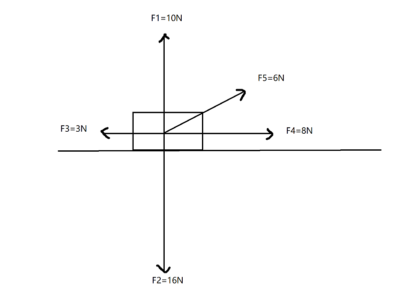
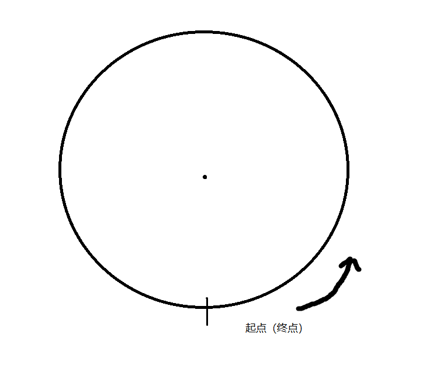
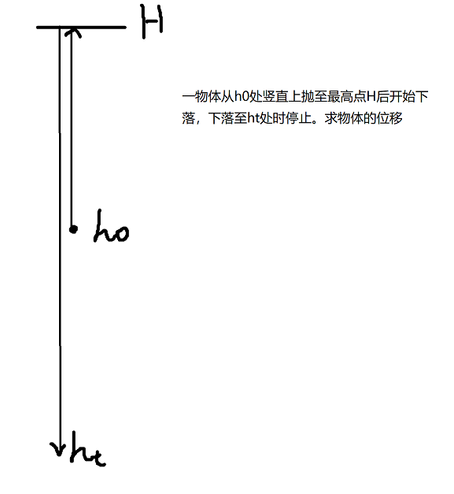
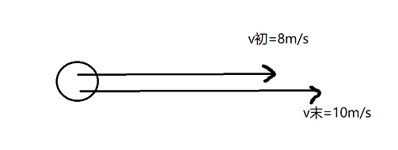
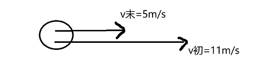
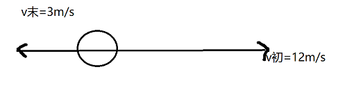
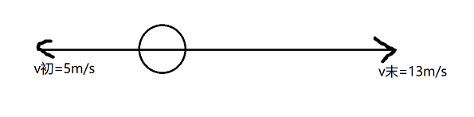
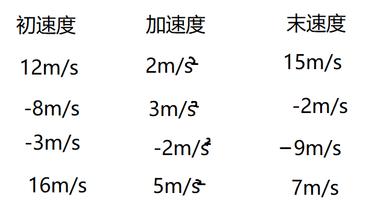
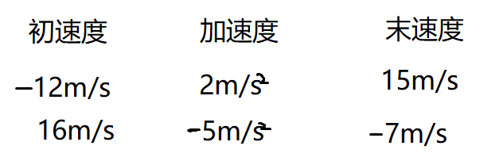

在学习之前，我们先归纳一下我们初中学过的一些物理量：时间，路程，速度，热量，力，压强……在我们现在知识的基础上，“力”这个物理量应该是当中最特殊的了。因为在我列举的几个物理量中，力是唯一一个有方向的物理量。为了区分这种物理量，我们规定，在物理学中，既有大小又有方向的量叫做矢量；只有大小没有方向的量叫做标量。
矢量和向量的差别就在于，矢量有方向。那我们如何表示一个矢量的方向呢？对于下面这个例子，我们分别是这样表示这几个力的：
F1=10N,方向竖直向上；
F2=16N,方向竖直向下；
F3=3N,方向水平向左；
F4=8N,方向水平向右；
F5=6N,方向向右上方；
所以我们知道了矢量的表示方法：文字上：先表示大小，再表示方向；图像上：一个带箭头的有向线段。但是问题来了：如果右上方有两个力，那如何区分呢？当我们知道它和水平面的夹角时，我们可以这样说：
F5=37°,方向沿水平面37°向右上。
但是这样的话，我们运算的时候就会觉得特别的不方便：运算过程中还要写这么多文字。并且在高中物理里，大量矢量的运算一般都是在一条直线上（平行四边形法则题和少数毒瘤竞赛题除外）。所以为了方便运算，我们一般把矢量的方向用$+$或$-$号来表示。首先，我们先定义一个方向为正方向，如果某个矢量的方向与正方向相同，这个矢量就为正（也就是前面的符号为0，一般不写）；如果这个矢量的方向与正方向不同，这个矢量就为负（也就是前面加一个负号）。这么写的好处是，我们不但能表示出矢量的方向，并且在运算中也很方便。具体的矢量运算法则我们后面再讲。
注意：矢量和标量的性质很重要，因为在后面我们每接触一个物理量，首先要分析的应是“这个物理量是标量还是矢量”。
在高中物理中，经常会遇到一些求变化量的题目。但是到底什么才是变化量？是看变多的还是变少的？我们可以形象举个例子。第一天，我手里有10元钱；第二天，我手里有20元钱；第三天，我手里有10元钱。在这个例子中，第二天和第三天我手里钱的变化数目都是10元钱。但是实际上，第二天我的钱变多了，第三天我的钱变少了。所以在物理学科上，我们定义一个物理量的变化量$\Delta x=x_{t}-x_0 $。
那么开始正戏：我们再引入几个物理量：速度，加速度，位移，时间。时间就不用多说了，标量，符号表示为$t$，单位为秒（$s$）。第二个，就是位移。根据字面意思来理解，就是物体位置的移动。但是注意，位移和初中所学的路程不同：位移相当于是初态到末态的连线，而路程是物体经过的长度的总和。所以如果我们以某个点为圆心，绕着它走一圈，最后所经过的路程是圆的周长，但是所经过的位却是0.但是需要注意的是：位移是个矢量。因为在这里，位移其实是一个从起点指向终点的矢量。所以位移：符号$x$，单位（国际单位）米（$m$），矢量。

虽然速度$v$这个物理量，我们在初中学过,但是速度在初中的定义是$v=\frac{s}{t}$。但是在高中物理中，速度的定义是位移与时间的比（$v=\frac{x}{t}$）。所以在上图中的人的速度应该为0。那是不是意味着我们初中学的速度就错了呢？并不是。因为大多数时候，初中物理所用到的速度大多是在一条直线上。所以这种情况下，只要不存在折返的情况，位移就等于路程。所以这时候就有一道比较骚的题目来了（填空题）：

滑动我看答案-------------------------------------------------------------------------------------------------------------------------------答案：|h_t-h_0|，方向竖直向下。
是不是被骚到了？所以我们来看一下这道题的几个考点和坑点：
- 位移是矢量，要答出方向和大小
- $h_t$和$h_0$都是位置，而不是长度
- 矢量的大小一定是非负数
所以我们可以总结出一些东西：
- 问一个矢量的时候，要看清楚是不是只问了大小，如果不是还必须答出方向
- 矢量的大小一定是非负数
我们还是按照刚才说的，先看一下速度的性质：标量还是矢量。其实，速度是个标量。我们还是来看速度的定义式：$v=\frac{x}{t}$。在这里面，$x$是矢量，$t$是标量，所以$v$一定是矢量。那速度的方向是什么呢？就是位移的方向。所以速度：矢量，符号$v$，单位（国际单位）米每秒（&m/s&）。
但是其实我们现在所说的速度，只能叫做平均速度，因为我们并没有说物体在匀速直线运动。那物体的瞬时速度怎么求呢？可以采用微元法。也就是说，当$t$趋近于0的时候，速度就趋近于这个点的瞬时速度了。
我们还会接触到一个物理量，叫做速率。这个物理量是个标量。由于我也一直没搞清楚这个到底是什么（百度上也说得比较模糊），我们就摘录一段维基百科的解释：
速率（英语：Speed）是物理学中的一个基本概念，是指物体在单位时间内经过的路程，用来表示物体运动的快慢程度。
那么同理，平均速率的求法与平均速度的求法大致相当。
因为在生活中，并不是所有时候速度都不变的。所以物理学家们引入了一个物理量：加速度。既然我们要研究速度的变化量，那什么是速度的变化量呢？根据上面的铺垫，我们可以得出：速度的变化量为末速度减初速度。写成公式的形式，就是$\Delta v=v_t-V-0$。（在物理学中，我们通常用$\Delta$表示某个物理量的变化量，用下标区分不同物体不同时候的某一个物理量。一般用下标$t$表示“末”状态，用下表$0$表示“初”状态）某些时候，速度的变化量又可以叫做速度的增量。但这个“增”又不一定是增加的意思，也可以表示减小。所以我们可以得到：物理量的增量是末减初，物理量的减量是初减末。
我们来分析速度增量这个物理量：因为是矢量相减，所以还是矢量。那它的方向是什么呢？由于现阶段我们研究速度的方向一般都是在一个平面内，所以，对于现在的题目而言：它的方向不是正的就是负的。所以他的方向我们根本不用考虑太多：就是说得答案的正负号。注意在做此类题目的时候，题目是否告诉了哪个方向为正方向。
但是有的时候，我们会遇到初速度和末速度方向不一样，这时候该如何计算呢？我们举几个例子（填空题）：
均以向右为正方向，求速度变化量。
（1）

（2）

（3）

（4）

滑动我看答案----------------------------------------------------------------------------------------------------------答案：(1) 2m/s (2) -6m/s (3) -15m/s (4) 18m/s
做这种题，一般的方法是，先以题目告诉的正方向负方向，把所有的速度符号标出来，然后运用公式$\Delta v=v_t-v_0$求出答案。这样的确可以。但是我比较喜欢用另一种方法：先画出一个数轴，原点为物体所在的地方。然后向左和向右的速度分别画在数轴的左右两端，然后两个终点之间的距离即为答案的大小，末速度的终点指向初速度的终点的方向即为$\Delta v$的方向。但是值得一提的是，这种题虽然我们用正负号表示了速度增量的方向，但是保险起见，我们还是应该在竖直的后面写上方向。如果题目明确规定了是求大小，就不要写方向了。
对于实际应用题而言，如果没有告诉正方向，那就默认初速度方向为正。
我们在生活中，判别一辆跑车的标准，通常是百公里加速的时间。其实我们比较的是同样大小的时间，速度的变化量。所以我们有了一个物理量，来说明单位大小的时间内物体速度的变化量：加速度（acceleration）。所以我们可以得出加速度的定义：速度变化量与时间的比值($a=\frac{\Delta v}{t}$)。所以加速度：符号$a$，矢量（因为$\delta v$是矢量，$t$是标量，所以$a$是矢量），单位米每二次方秒（$m/s^2$，因为$\Delta v$的单位是$m/s$，$t$的单位是$s$，所以单位相除得到$m/s^2$）。加速度是描述物体速度变化快慢的物理量。当然，这儿的加速度应该是平均加速度。
这时候又来了一道骚题，不过我们还是当做例题来讲吧：
已知物体的初速度，末速度，加速度，求物体是做加速运动还是减速运动。

滑动我看答案-------------------------------------------------------------------------------答案：（1）加速 （2）减速 （3）加速 （4）减速
所以肯定会有人迷惑了：为什么速度变小了还是加速运动呢？我们先来回顾一下加速度和速度这两个东西。首先，它们是个矢量。对，它们是矢量！所以我们给矢量比较大小的时候，就一定是比较其绝对值，而不是把符号也算上。就相当于我们跳远比赛的时候，可能规定了两个不同的不一定在一条直线上的跳的两个方向，然后两个人跳出的成绩，我们是只看长度而不会看方向的。矢量大小的比较要取绝对值。
所以现在应该明白答案是怎么来的了吧：（1）末速度大于初速度：加速 （2）末速度小于初速度：减速 （3）末速度大于初速度：加速 （4）末速度小于初速度：减速。
我们来看一道变式训练：

滑动我看答案------------------------------------------------------------------------------------答案：（1）先减速后加速 （2）先减速后加速
其实这道题和例题差不多，只是我们需要明白：加速度恒定的时候，物体不一定只做加速或减速运动。对于这种题，我一般的解决方法是：
- 判断情景是否合理（比如说，初速度为$1m/s$，末速度为$3m/s$，但加速度为$-2m/s^2$，就不合理）。若不合理直接返回答案不合理，结束；否则继续。
- 判断初速度和末速度方向是否一样，如果一样则继续，否则跳到4。
- 判断加速度和初速度（末速度）方向是否一样，如果一样，则返回答案加速运动，否则返回答案减速运动。结束。
- 初末速度方向不一样，由于加速度没有变化，一定是先减速后加速。
- 结束
处理这一类问题，我们可以用模拟的方法。在数轴上画出初速度与末速度的位置，加速度的方向就只能是正方向或者负方向。然后我们假设有一个点，从初速度的位置，以a的大小为速度，运动到了末速度的位置，问这个点到远点的距离变化过程。这也就是我们上面的题型。当然还有一类题型，也就是告诉你初速度的正负，加速度的正负，问速度的变化，这也可以用画图的方法做。
在做题过程中，我们经常会发现，他就是不说成加速度，非要说成其他形式。比如，速度变化率，这也算加速度的一种表达方式。同样，速度变化率也就是单位时间内的速度增量。那有其他变化率吗？有，基本来说比值定义法（也就是某个物理量与时间的比定义出来的物理量）定义的物理量都可以说成~变化率。比如速度我们可以说成是位移变化率。
对于加速度的简单计算，其实我们也已经提到过了。因为$a=\frac{\Delta v}{t}$，上面我们又讲了$\Delta v$的计算方法，所以加速度就只需要除以一个$t$。
最后，我们来看一下第一章第一节的内容（最简单的内容）：质点、参考系、空间与时间。首先，参考系，也就是初中说的参照系，应用一段维基百科的讲解:
在物理学中指用以测量并记录位置、定向以及其他物体属性的坐标系；或指与观测者的运动状态相关的观测参考系；又或同指两者。
质点，也就是一个有质量的点，这是物理学家运用了理想模型法的方法，为了方便的解决问题而提出的。一个简单的例子：
天体运动学家们研究哈雷彗星运动轨道时，可以把哈雷彗星看做质点。
研究扇耳光时脸的形变，不能把人脸看做质点。
所以我们可以总结：
- 在研究物体运动时,其大小与形状可以不考虑时,可以视为质点；
- 物体各部分运动情况相同,在研究其运动规律时,可以视为质点；
- 物体平动时,可以视为质点 如果物体上各点得运动情况完全相同,或者物体上各点得运动得差别相对于所研究的问题来讲可以忽略,我们就可以把物体简化为一个点,认为物体的质量都集中到这个点上,这个点称为质点.
然后我们需要区分的是时间和时刻。用图形化的方法来理解：时刻是一个点，时间是一条线。x秒内，这段时间有x秒；第x秒内，这段时间有1秒。还有其他的很多例子，书上都有详细的讲解。
最后对于空间、时间、物质，我们有以下结论：
- 没有绝对空间和时间，空间和时间都是相对而言的。
- 现代物理学已证明，时间和空间不能离开物质而独立存在，没有绝对时空，时间、空间和物质世界是融为一体的。